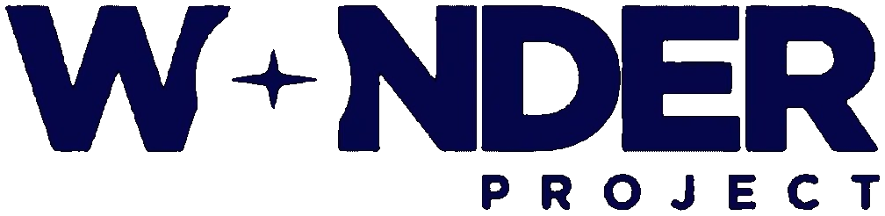

About
I’m a PM who likes understanding how complex systems work—and making them simpler.
I came to product management through the sciences and customer-facing work. Experimentation taught me to form hypotheses, test them, and let evidence change the plan. Working with customers taught me to apply that discipline to products.
At Wonder Project I worked on the systems behind streaming—content delivery, metadata, content management, privacy, and the DTC product. I get into the details, learn how the pieces connect, and turn that understanding into software operations teams can actually run.

Relevant experience
-
ChowNow Sales Development Rep 2017 – 2018 -
Griddy Associate Product Manager 2019 – 2020 -
Sensor Bio Project Manager and Customer Success 2021 – 2022 -

Wonder Project Product Manager 2023 – 2026